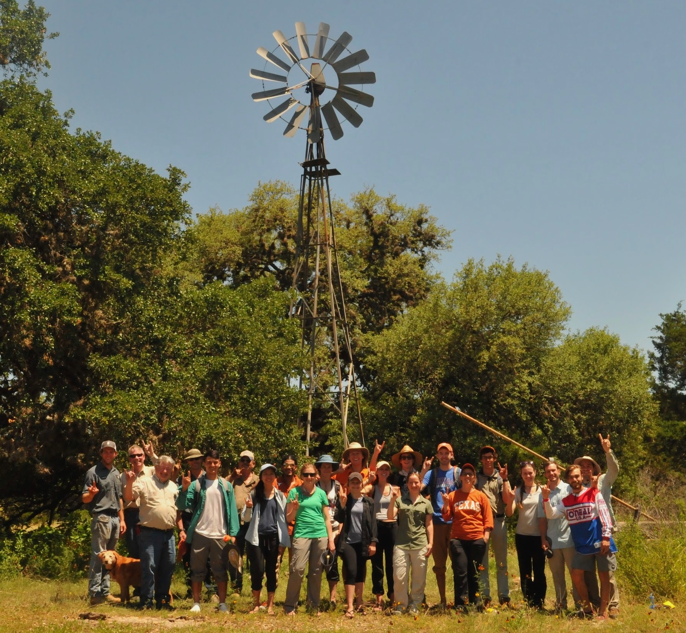
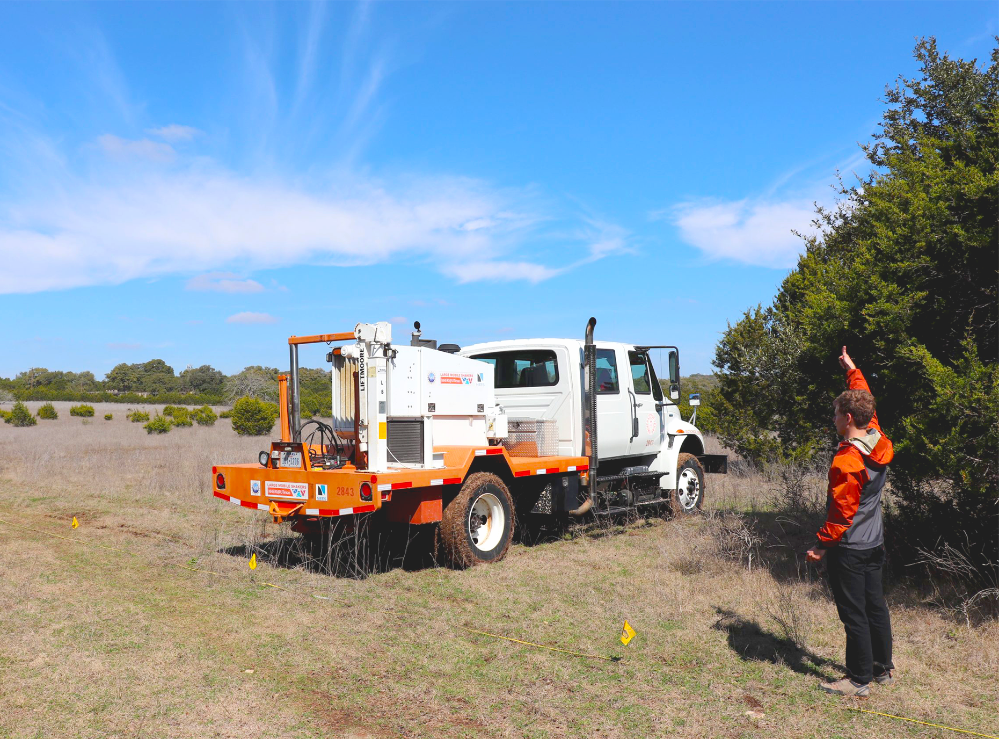

Education & Field Courses
The outdoor learning center hosts a variety of hands on education opportunities

Hydrology Field Camp
Hydro field camp is super awesome and much of it takes place in the hill country - it is currenly run by Daniella Rempe and Ashley Mathany. More details to come...
Geophysics Seismic Reflection Demonstration
 In February 2020, the Texas Geophysical Society, The University of Texas at Austin’s student chapter of the Society of Exploration Geophysicists, led a unique seismic survey in the heart of the Texas Hill Country. The experiment took place in an open field at the White Family Outdoor Learning Center, which is part of the Jackson School of Geosciences’ Texas Observatory, and adds to the breadth of research conducted at the property since it was donated to the school by the White family. Read on...
GEO 401
This course takes a field trip to the White Family Outdoor learning center in the fall semester.